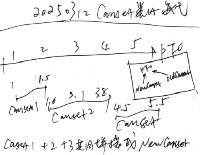
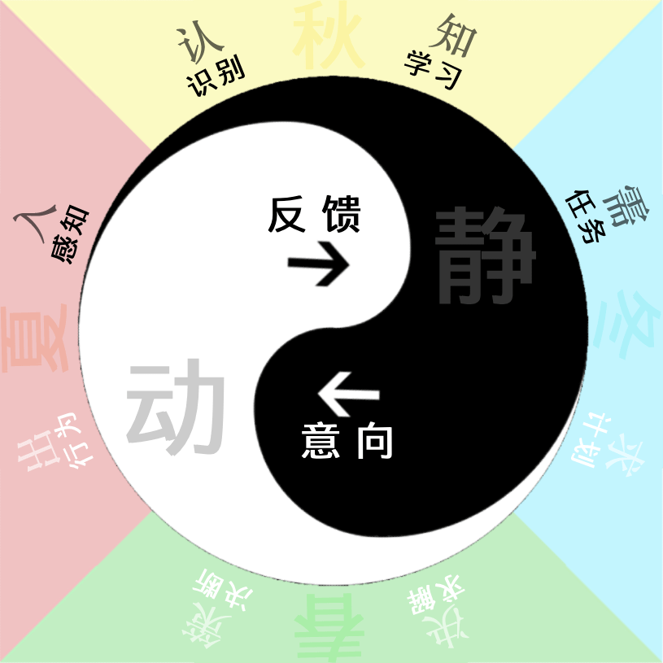

AI系列之《2024.09-10：反思子任务与迁移链重构》

来源：HELIX_THEORY/手稿/assets/733_迭代Canset类比.png

来源：HELIX_THEORY/手稿/assets/729_思维框架图v6.png
来源：Note33.md
9 到 10 月，工作集中在 TCPlanV2 细节、Canset 类比算法、outSPDic 错误、反思评价公式、反思子任务、前段条件满足，以及将 BFI 分成 BF 和 FI 两步。
反思子任务的启用，使反思不只是后台评价，而成为可以进入计划流程的任务。这让系统在执行前后都能主动检查：当前方案是否仍然成立，条件是否满足，反馈是否改变了原判断。
BFI 拆分为 BF 和 FI，是对迁移链的细化。复杂迁移不能总靠一步完成，把中间环节拆开后，系统更容易定位相似性来自哪里，也更容易修复迁移错误。